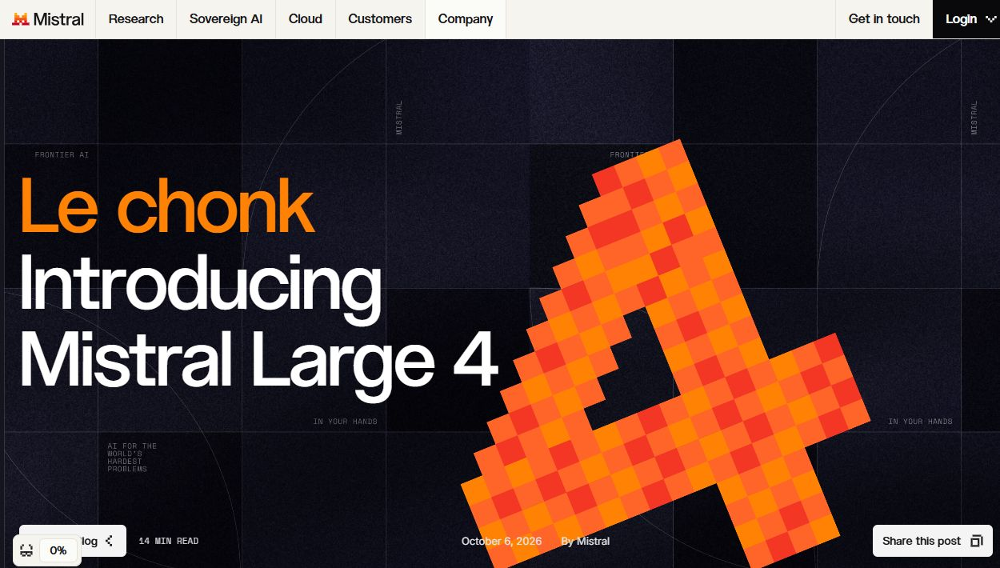

AI NEWS ISSUE 09
AI 경쟁,
모델보다 운영 가능한 지능으로
Mistral Large 4, GLM 5.3의 Bedrock 진입,
Agent Skill과 다국어 추론이 보여주는 변화
AT A GLANCE
30초 요약
- Mistral Large 4 약 1조 파라미터 모델의 API 프리뷰가 시작됐습니다. 가중치는 10월 말 공개 예정입니다.
- GLM 5.3 오픈웨이트 모델을 GPU 직접 운영 없이 Bedrock에서 쓸 수 있습니다. 이용 대상과 리전 조건은 확인해야 합니다.
- AWS Agent Skill 기존 코딩 에이전트에 SageMaker 추론 최적화 지식을 더합니다. 결과는 검토 가능한 코드로 남습니다.
- Cohere Labs 사용자의 언어로 추론 문장을 생성하도록 학습한 연구를 소개했습니다. 한국어 업무의 정확도를 검증한 발표는 아닙니다.
10월 5~6일의 공식 발표와 관련 문서를 2026년 10월 7일 한국시간 기준으로 확인했습니다. 발표 사실, 연구팀의 평가, 헬로우 휴먼의 해석을 구분하며 제품 성능을 직접 재측정하지는 않았습니다.
모델 경쟁은 계속되고 있습니다. Mistral은 약 1조 파라미터의 새 모델을, AWS는 오픈웨이트 모델을 이용할 새 경로를 소개했습니다. 동시에 코딩 에이전트에 업무 지식을 추가하는 Skill과, 사용자의 언어로 추론 문장을 생성하는 연구도 나왔습니다.
업무에 AI를 연결하는 입장에서는 네 가지 소식에서 이런 질문을 읽을 수 있습니다. 좋은 모델 하나를 고르는 데서 더 나아가, 모델을 바꿔도 같은 일을 수행하고 결과를 확인할 수 있는 구조를 만들 수 있을까요?
01 / MISTRAL LARGE 4
1조 파라미터 모델,
지금 쓸 수 있는 것은 API 프리뷰입니다
Mistral은 10월 6일 Mistral Large 4(ML4)의 공개 프리뷰를 시작했습니다. 텍스트와 이미지를 함께 처리하는 멀티모달 모델로, 코딩·추론·에이전트 작업을 한 모델에서 수행하도록 설계됐습니다. Mistral 공식 발표 ↗

파라미터는 모델이 학습한 수치입니다. ML4는 그 수치 전체를 매번 계산하지 않고 일부 전문가 묶음만 골라 쓰는 MoE(Mixture-of-Experts) 구조를 사용합니다. 큰 회사에서 문제마다 필요한 전문팀만 호출하는 방식에 가깝습니다.
- 전체 모델 규모
- 약 1조 개발표문 1T · 모델 문서 1.05T
- 토큰당 활성 파라미터
- 490억 / 520억발표문 49B · 모델 문서 52B
확인 시점에 모델 문서와 발표문의 활성 파라미터 표기가 달랐습니다. 490억을 확정 사양으로 단정하지 않고 두 표기를 함께 남깁니다. 활성량이 적다는 사실만으로 실제 메모리나 비용 절감률을 계산할 수는 없습니다.
현재 이용 경로는 Mistral Studio의 API 프리뷰입니다. 발표에 기재된 기본 요금은 입력 100만 토큰당 1.36달러, 출력 100만 토큰당 4.18달러입니다. Mistral은 160개가 넘는 언어의 학습 데이터를 사용했고, 유럽 내 자체 데이터센터의 NVIDIA Grace Blackwell GPU 3,800개에서 처음부터 학습했다고 밝혔습니다.
현재 제공과 향후 계획
API로 평가한 뒤, 가중치 공개를 기다립니다
- 지금 가능API 프리뷰 사용서비스를 호출해 내 업무에 맞는지 평가
- 현재 진행모델 평가·보완Mistral의 추가 학습과 안전성 점검
- 10월 말 예정가중치 공개공개 후 라이선스와 자체 배포 조건 확인
따라서 지금 ML4를 “내려받아 사내 GPU에서 바로 돌릴 수 있는 모델”이라고 소개하면 정확하지 않습니다. API 공개와 모델 가중치 공개는 다른 단계입니다.
성능도 평가 조건과 함께 읽어야 합니다. Mistral은 DeepSWE v1.1 61.7%, Terminal-Bench 4 28.3% 등을 소개했습니다. 발표에는 자체 평가뿐 아니라 Artificial Analysis, Vals AI 같은 외부 평가도 포함되어 있습니다. 모두 자체 벤치마크라고 묶을 수는 없지만, 공개 점수가 우리 업무의 성공률을 보장하지도 않습니다.
Mistral은 모델 연구부터 학습 인프라, API 제공, 향후 자체 배포까지 선택지를 넓히려 합니다. 모델의 성능과 함께 누가 인프라를 운영하고 사용 조건을 정하는지가 경쟁의 축이 되고 있습니다.
02 / GLM 5.3 ON BEDROCK
오픈웨이트 모델을 쓰는 것과
직접 운영하는 것은 다릅니다
AWS는 10월 5일 Z.ai의 GLM 5.3을 Amazon Bedrock에 정식 추가했습니다. 전체 7,530억 파라미터 중 토큰당 약 400억 개를 사용하는 MoE 모델이며, 최대 100만 토큰 문맥과 12만8천 토큰 출력을 지원한다고 소개했습니다. 코딩과 여러 단계를 오래 이어가는 에이전트 작업이 주요 용도입니다. AWS 출시 공지 ↗
오픈웨이트는 실행에 필요한 학습된 수치를 공개한다는 뜻입니다. 공개 모델을 직접 내려받아 운영할 수도 있고, 서비스 사업자가 대신 운영하는 모델을 API로 이용할 수도 있습니다.
이용 방식 비교 · 설명용 도식
같은 모델에도 운영 경로는 두 가지
가중치 확보 → GPU·추론 서버 준비 → 모델 운영
우리가 인프라와 운영 설정을 관리합니다.우리 애플리케이션 → Bedrock API → GLM 5.3
AWS가 추론 인프라를 운영합니다.Bedrock에서는 GPU 클러스터를 직접 구성하지 않아도 됩니다. OpenAI 호환 Responses·Chat Completions API와 AWS Invoke·Converse API를 지원합니다. 다만 이용 자격을 갖춘 기업 고객 대상이며, 미국 및 글로벌 교차 리전 추론 프로필을 통해 제공됩니다. 요청을 받는 리전과 실제 처리 리전이 다를 수 있으므로 데이터 처리 위치도 확인할 항목입니다. AWS 기능·이용 조건 안내 ↗
에이전트에서는 프롬프트 캐싱도 눈여겨볼 기능입니다. 시스템 지시, 도구 정의, 저장소 문맥처럼 반복해서 보내는 앞부분을 재사용해 입력 비용과 지연시간을 줄이는 방식입니다. AWS는 자동 캐싱과 명시적 캐시 제어를 소개하며 API별 기능을 안내합니다.
캐시가 있다고 전체 비용이 같은 비율로 줄지는 않습니다. 입력·출력 토큰 비용, 캐시 적중률, 도구 실행 비용, 재시도 횟수를 함께 봐야 합니다. 추론 토큰과 실패한 시도의 비용도 빠뜨리면 안 됩니다.
AWS가 소개한 코딩·보안 성능은 Z.ai의 평가를 인용한 것입니다. Bedrock의 운영·보안 체계와 모델 답변의 품질은 각각 확인해야 합니다. 그래도 기업 개발자에게는 의미 있는 선택지가 늘었습니다. 모델 선택과 인프라 운영 방식을 따로 판단할 수 있습니다.
03 / AWS AGENT SKILL
새 에이전트를 만들기보다
기존 에이전트에 업무 지식을 더합니다
AWS는 같은 날 SageMaker AI의 추론 최적화에 aws-ai-ml Agent Skill을 활용하는 방법을 소개했습니다. Kiro, Claude Code, Codex처럼 이미 쓰는 코딩 에이전트에 모델 운영 설정과 성능 측정에 관한 지식을 더하는 구성입니다. AWS 공식 소개 ↗
Skill은 특정 업무의 지침과 참고 자료를 묶어 에이전트가 필요할 때 읽도록 하는 방식입니다. MCP는 에이전트와 외부 도구를 연결하는 규약입니다. AWS의 구성에서는 두 가지를 함께 사용합니다. MCP 연결만으로 모든 Skill이 자동 호환된다는 뜻은 아닙니다.
“이 모델의 응답 속도 조건을 만족하면서 비용이 낮은 SageMaker 인스턴스를 찾아줘.”
에이전트는 필요한 조건을 묻고, 추천·측정 작업을 위한 SageMaker Python SDK v3 코드를 생성합니다. 실행 결과를 바탕으로 배포 설정을 비교할 수 있습니다. “현재 엔드포인트 성능을 측정해줘”처럼 운영 중인 모델의 응답 지점을 대상으로 요청할 수도 있습니다.
AWS가 강조한 부분은 실행 통제입니다. 실제 엔드포인트에 트래픽을 발생시키는 벤치마크를 실행하기 전에는 영향을 알리고 명시적인 확인을 받도록 안내합니다. 생성된 코드는 사람이 읽고 수정하고 실행할 수 있으며, 필요한 AWS 계정 권한과 자원 사용 비용은 별도로 적용됩니다.
상품 검수, 쿠폰 정책 분석, SQL 분석, 장애 로그 확인처럼 업무별 지식을 별도 모듈로 관리할 수 있습니다. 에이전트를 바꿀 때에도 재사용할 여지가 생기지만, 입력 형식·도구 권한·완료 조건이 새 실행 환경에서도 지켜지는지는 다시 시험해야 합니다.
04 / COHERE LABS
한국어 답변 다음에는
판단 근거를 읽을 수 있는가
Cohere Labs는 10월 6일 Tiny Aya L2-Thinker 연구를 소개했습니다. 약 33억5천만 파라미터(3.35B)의 작은 모델로, 사용자가 질문한 언어로 추론 문장을 생성하는 방법을 다룹니다. 해당 논문은 9월 9일 arXiv에 먼저 제출됐으므로, 10월 6일이 연구의 최초 공개일은 아닙니다. Cohere 연구 소개 ↗ · 논문과 제출일 ↗
연구팀이 주목한 것은 최종 답변의 언어만이 아닙니다. 질문은 한국어여도 모델이 답을 만들기 전에 출력하는 명시적인 추론 문장은 영어일 수 있습니다. 이 문장을 사용자의 언어로 만들면 사람이 설명을 읽고 오류를 찾기 쉬워질 수 있습니다.
연구팀의 데이터 구성
세 종류의 학습 데이터를 섞었습니다
연구팀은 수학·상식·문화적 추론·지시 이행·글쓰기 등을 다루는 6개 벤치마크, 60개 언어 평가에서 93%가 넘는 질문 언어 일치 추론 비율을 보고했습니다. 이 수치는 정답률이 아니라 생성된 추론 문장이 질문 언어를 따르는 비율입니다. 한국어만의 정확도나 실제 업무 성공률로 해석할 수 없습니다.
영어로 추론하도록 학습한 비교 모델과의 정확도 차이는 대부분의 평가에서 작았지만, 경시대회 수준의 수학을 다루는 PolyMath에서는 더 큰 하락이 나타났습니다. 이번 발표는 연구 모델과 데이터의 공개이며 상용 North나 Command의 새 기능 발표는 아닙니다.
생성된 추론 문장이 모델 내부 계산 전체를 충실하게 보여준다는 보장도 없습니다. 연구팀 역시 문장이 읽기 쉬워도 답에 유의미한 영향을 주지 않거나 같은 내용을 반복할 수 있다고 설명합니다.
“왜 이 상품을 판매 불가라고 판단했나요?”라는 질문에는 읽을 수 있는 한국어 설명과 함께 적용한 규칙, 조회한 상품 조건, 실제 도구 실행 결과가 필요합니다. 추론 언어의 개선은 검토를 도울 수 있지만, 판단을 검증할 증거를 대신하지는 않습니다.
HELLO, HUMAN'S VIEW
모델이 바뀌어도 남는 것,
잘 정의된 업무 능력입니다
네 가지 소식은 서로 다른 문제를 다룹니다. Mistral은 모델과 인프라를, AWS Bedrock은 운영 경로를, Agent Skill은 업무 지식의 재사용을, Cohere는 사람이 읽을 수 있는 추론 언어를 다룹니다.
이를 업무 설계 관점에서 연결하면 모델 이름보다 수행할 일을 중심에 놓자는 방향을 생각해볼 수 있습니다. 쿠폰 적용 조건, 상품 판매 가능 여부, 주문 취소 정책, 배송 지연 보상 규칙은 특정 모델의 버전보다 오래 남습니다.
헬로우 휴먼의 설계 제안 · 설명용 개념도
업무 규칙과 증거를 모델 밖에 남깁니다
문맥을 읽고 다음 행동을 제안
상품·쿠폰 조건 조회와 결과 반환
이 글에서 업무 능력(Capability)은 프롬프트 하나보다 넓은 개념입니다. 모델이 수행할 규칙, 연결할 도구, 확인할 증거, 완료 기준까지 포함합니다. 이를 분리해 관리하면 모델 교체 때 다시 만들어야 하는 부분을 줄일 수 있습니다.
다만 모델만 바꾸면 같은 결과가 나온다고 가정해서는 안 됩니다. 새 모델의 도구 사용, 결과 형식 준수, 예외 처리 능력을 같은 업무로 비교해야 합니다. 재사용할 수 있는 설계와 실제 호환성은 시험으로 연결해야 합니다.
SMALL EXPERIMENT
쿠폰 정책을 Skill로 분리해
두 모델에서 비교해봅니다
가상 상품·쿠폰 데이터로 promotion-policy-check Skill을 만들어볼 수 있습니다. 아직 실행하지 않은 모임의 실험 제안입니다. 실제 고객 데이터는 쓰지 않습니다.
- 업무 규칙을 먼저 고정합니다. 입력 스키마, 조회할 API, 쿠폰 적용 규칙, 결과 JSON 형식, 완료 조건과 필요한 증거를 정의합니다. 적용 가능 여부, 위반한 규칙, 확인한 상품·쿠폰 조건, 사용한 도구를 반환하도록 합니다.
- 같은 가상 사례를 두 모델에 줍니다. 최소 주문금액의 경계, 제외 상품, 만료된 쿠폰, 정보 누락 등 20개 사례와 기대 결과를 미리 정합니다. 도구 권한, 초기 데이터, 재시도·시간 한도도 맞춥니다.
- 실패와 사람의 수정까지 기록합니다. 현재 쓰는 모델과 이용 가능한 GLM 또는 Mistral API 모델을 비교합니다. 모델 버전과 캐시 조건을 남기고, 사람의 최종 확인을 거친 뒤 성공을 셉니다.
- 업무 성공률
- 미리 정한 완료 기준을 통과한 사례 수 ÷ 전체 20개
- 잘못된 도구 호출
- 권한 밖 호출, 틀린 인자, 불필요한 반복 호출의 수
- 작업당 총비용
- 실패·재시도를 포함한 모델 API·도구 실행 비용 ÷ 전체 20개
- 사람이 수정한 시간
- 결과 검토, 규칙 오류 수정, 재지시에 든 시간
비용이 낮아도 성공률이 떨어진다면 같은 능력을 확보했다고 보기 어렵습니다. 총비용을 성공 사례 수로 나눈 값도 함께 보되 성공이 0건이면 계산하지 않습니다. 사람의 시간은 별도로 비교하고, 금액으로 바꿀 때에는 두 모델에 같은 환산 기준을 씁니다.
두 모델이 같은 완료 기준을 만족한다면, 특정 모델에 의존하던 업무를 분리할 가능성을 확인한 것입니다. 이 작은 실험만으로 모든 모델의 호환성이나 실제 서비스 품질까지 검증됐다고 볼 수는 없습니다.
모델은 계속 바뀝니다.
잘 정의된 일과 그 결과를 확인할 증거는 남습니다.
읽은 자료
- Mistral, Introducing Mistral Large 4 ↗ 10월 6일 · API 프리뷰·공개 계획·학습 인프라·평가
- Mistral Large 4 모델 문서 ↗ 10월 7일 확인 · 파라미터 표기 차이·가중치와 라이선스 미공개
- AWS, GLM 5.3 Bedrock 출시 공지 ↗ 10월 5일 · 사양·기업 고객·교차 리전 제공
- AWS, Introducing GLM 5.3 on Amazon Bedrock ↗ 10월 5일 · API·캐싱·운영 조건
- AWS, SageMaker 추론 최적화 Agent Skill ↗ 10월 5일 · 코드 생성·확인 절차·적용 범위
- Cohere Labs, Multilingual Bridges ↗ 10월 6일 · 데이터 구성·언어 일치 비율·정확도 한계
- Building Multilingual Bridges 논문 ↗ 9월 9일 최초 제출 · 연구 범위와 모델·데이터 공개
공식 영문 원문을 확인했습니다. Mistral 이미지는 공식 발표 페이지의 캡처이며 나머지 도식은 이해를 돕기 위한 설명입니다. 벤치마크를 재현하거나 AWS 자원을 실행한 결과는 포함하지 않았습니다.